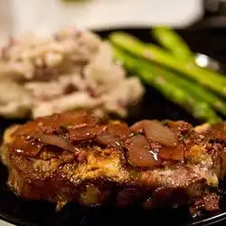

Filet Mignon con Costra de queso azul y Salsa de vino Oporto

Vale la pena el esfuerzo! Tierno y sabroso, ideal para una cena. Prepare la salsa con un día de anticipación para reducir el tiempo de preparación.
Ingredientes
- 1 cucharada de mantequilla
- ½ taza de cebolla blanca picada
- 3 dientes de ajo, picados
- 1 cucharada de tomillo fresco picado
- ¾ taza de caldo de res bajo en sodio
- ½ taza de vino de Oporto
- 1 cucharada de aceite vegetal
- 4 filetes de filet mignon (1 1/2 pulgada de grosor)
- ¾ taza de queso azul desmoronado
- ¼ de taza de pan rallado panko
Preparacion
- Derrita la mantequilla en una sartén a fuego medio. Agrega la cebolla, el ajo y el tomillo. Cocine, revolviendo constantemente, hasta que la cebolla esté tierna. Agregue el caldo de res, raspando los trozos de cebolla del fondo de la sartén, luego agregue el vino de Oporto. Llevar a ebullición y cocinar hasta que la mezcla se haya reducido a aproximadamente 1/2 taza. Dejar de lado. Esto también se puede preparar con anticipación y recalentar.
- Precalienta el horno a 350 grados F (175 grados C). Caliente el aceite en una sartén de hierro fundido u otra sartén apta para horno a fuego alto. Dorar los filetes rápidamente por ambos lados hasta que se doren, luego colocar toda la sartén en el horno.
- Ase los filetes en el horno durante unos 15 minutos a fuego medio, con una temperatura interna de 145 grados F (63 grados C). Puede ajustar este tiempo para permitir que los filetes terminen justo por debajo del grado de cocción deseado si el medio no es lo que prefiere. Retirar del horno y colocar en una bandeja para hornear. Mezcle las migas de panko y el queso azul. Cubra cada filete con una capa de esta mezcla.
- Precalienta la parrilla del horno. Coloque los filetes debajo del asador precalentado hasta que la cobertura de queso esté dorada y burbujeante. 3 a 4 minutos. Retirar del horno y dejar reposar durante al menos 15 minutos antes de servir. Sirva con salsa tibia de vino de Oporto.
